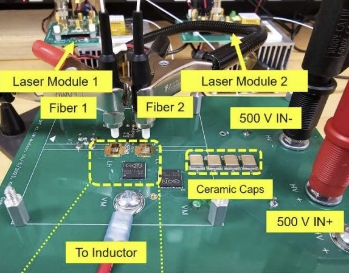
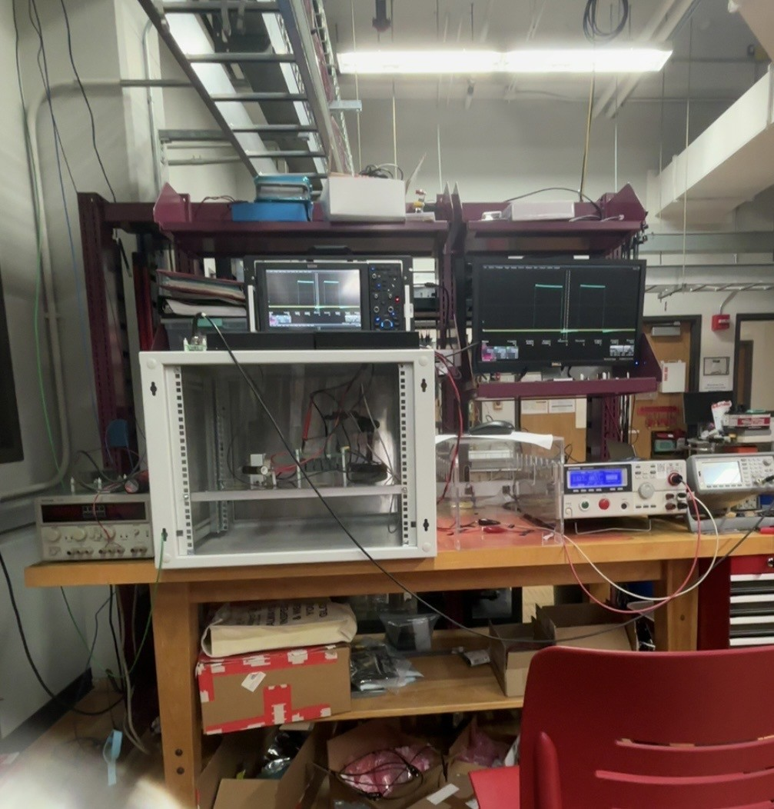
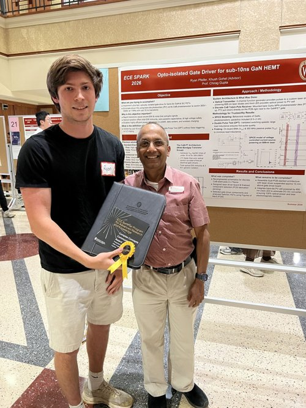

Optically isolated GaN gate drive
Undergraduate Researcher, Wide-Bandgap Materials and Devices Lab
A discrete, chip-on-board gate drive that switches bare-die GaN HEMTs through optical fiber, targeting sub-10 ns VDS transitions with full galvanic isolation. I modeled GaAs phototransistor switching in LTspice, laid out the chip-on-board PCBs in Altium to minimize parasitic inductance, and evaluated switching speed with custom-packaged bare-die parts in a double-pulse test.
I presented this work at the 2026 ECE SPARK poster symposium and received the Complex Concepts Communicator Award, one of three awards across 31 presenters, for clarity in explaining the research to peers and faculty.
- <10 nstarget VDS transition
- 0.5–2 nHparasitics included in SPICE
- 1 of 3awards, 31 presenters